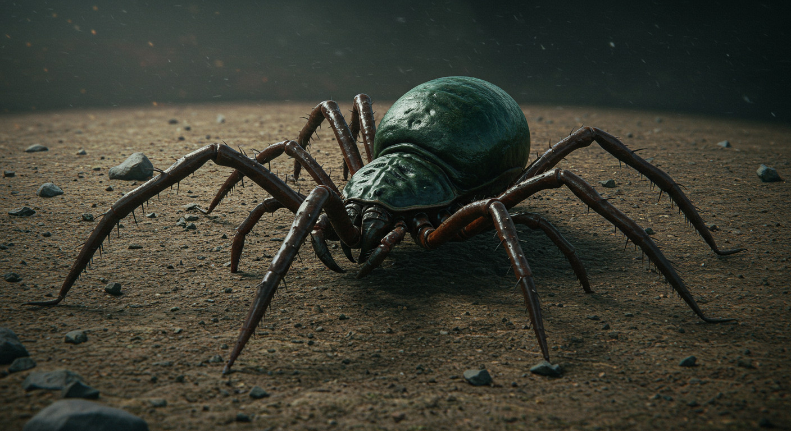

T'klan Tick
Description
A hexapedal arachnid, the T'klan Tick is roughly the size of a human hand. Its most notable feature is its bulbous abdomen, which houses a potent venom sac. The T'klan's ticks are ambush predators, lying in wait in dark, moist environments.
Characteristics
- Size: Small (approximately 2-3 cm in length)
- Color: Dark brown to black with iridescent markings
- Habitat: Prefers dark, humid environments
- Behavior: Aggressive when threatened, attracted to heat sources
- Diet: Parasitic, feeds on blood and tissue fluids
- Reproduction: Rapid breeding cycle, lays clusters of eggs in protected areas
Danger Level
High - The T'klan Tick's venom can cause severe neurological damage and death within hours if not treated. Immediate medical attention is required if bitten. The venom contains a complex mixture of neurotoxins and anticoagulants that can cause:
- Severe pain at the bite site
- Progressive muscle paralysis
- Respiratory distress
- Neurological impairment
- Systemic organ failure in severe cases
Treatment
Standard anti-venom treatments are effective if administered within the first hour of exposure. The treatment protocol includes:
- Immediate immobilization of the affected area
- Administration of anti-venom serum
- Supportive care for respiratory and neurological symptoms
- Monitoring for secondary infections
- Long-term follow-up for potential neurological complications
Prevention
When operating in areas known to harbor T'klan Ticks, the following precautions are recommended:
- Wear protective clothing covering all exposed skin
- Use insect repellent specifically formulated for arachnids
- Regular inspection of clothing and equipment
- Maintain clean, well-lit living and working spaces
- Carry emergency medical supplies including anti-venom